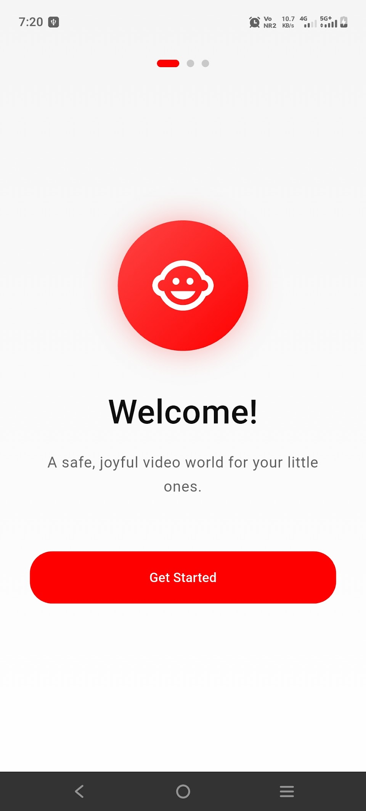
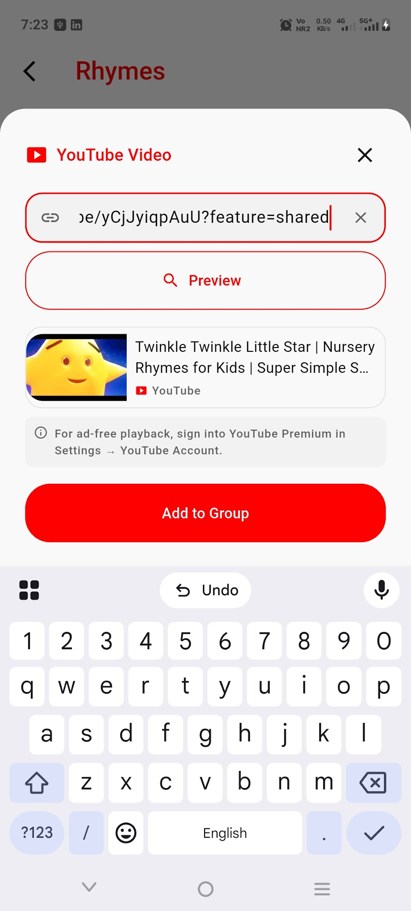

SafePlay Video Player
Ad-free, parent-controlled videos for kids.
SafePlay Video Player (called Kids Safe Video Player on Android) is a free, offline, parent-controlled video player for kids. A parent chooses the videos, sets screen-time limits and locks the settings with a PIN or biometrics.
Also known as: Kids Safe Video Player.
- Multiple child profiles with names and avatars
- Group videos your way: Cartoons, Learning, Bedtime and more
- Screen-time limits with a countdown, plus an optional kiosk mode
- PIN and biometric lock for all parent settings


More screenshots


Key facts
- Platforms
- iPhone and iPad (iOS 15 or later) and Android
- Price
- Free, with optional in-app purchases
- Works offline
- Yes, for videos saved on your device (YouTube videos you add need internet)
- Account required
- No
- Ads and trackers
- None
- Age rating (App Store)
- 4+
- Android name
- Kids Safe Video Player
Frequently asked questions
Does it need an internet connection?
Not for videos stored on your device. Internet is used only to stream a YouTube video that a parent has added, and to process optional purchases.
Does the app collect my child's data?
There is no account and no company server. Profiles, video lists, screen-time settings and watch history stay on your device.
Is it free?
Yes. Optional in-app purchases are handled by the App Store and Google Play.
How do I delete the data?
Delete profiles or clear watch history in Parent Mode, or uninstall the app to remove everything from the device. See the privacy policy for the data-deletion request form.
Guides: How to set screen-time limits for your child's videos
More help: SafePlay Video Player support · Privacy policy